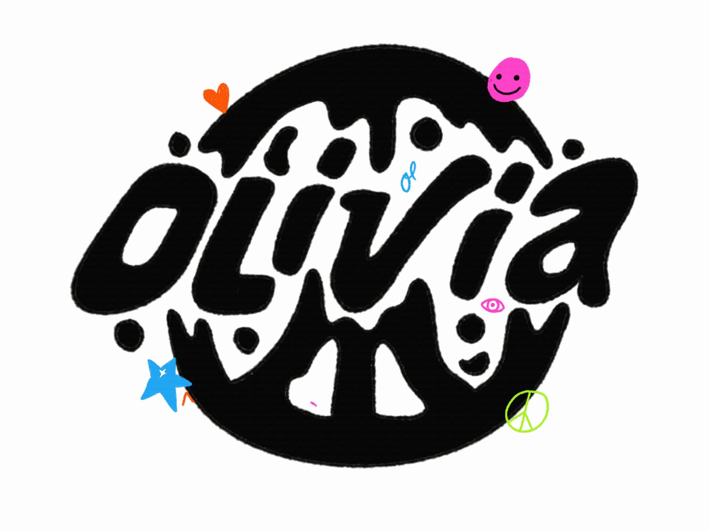
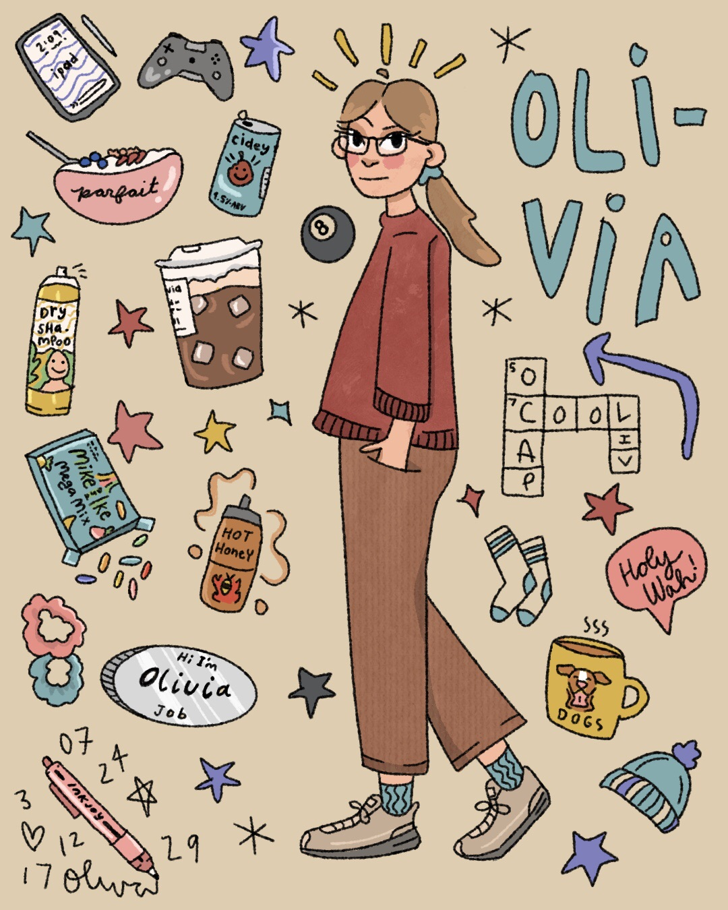

About
Olivia, or the artist currently known as O. Cap, is a 22 year old artist based in Michigan’s very cold Upper Peninsula. She is a self-taught digital artist (though known to make a mess with paint at times) and specializes in illustration and design. She loves colors, organic shapes, and giving a hand-drawn feel to her work. She received an Associates in Art & Design from Bay College in Escanaba. She would love to make some really dope art with you.